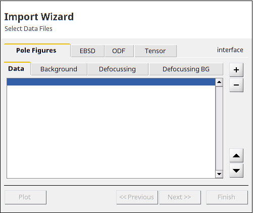

Importing and Exporting Data into MTEX
How to import and to export Pole Figure Data, EBSD Data and ODFs
|
|
Importing Pole Figure Data | How to import Pole Figure Data |
|
|
Importing EBSD Data | How to import EBSD Data |
|
|
Importing and Exporting ODF Data | Explains how to read and write ODFs to a data file |
Introduction
The central way to import any kind of experimental data into MTEX is through the import wizard
import_wizard('PoleFigure') The import wizard is able either to create a workspace variable or to generate a script, then one has the possibility to choose a predefined Template appending a code some snippets.
| DocHelp 0.1 beta |